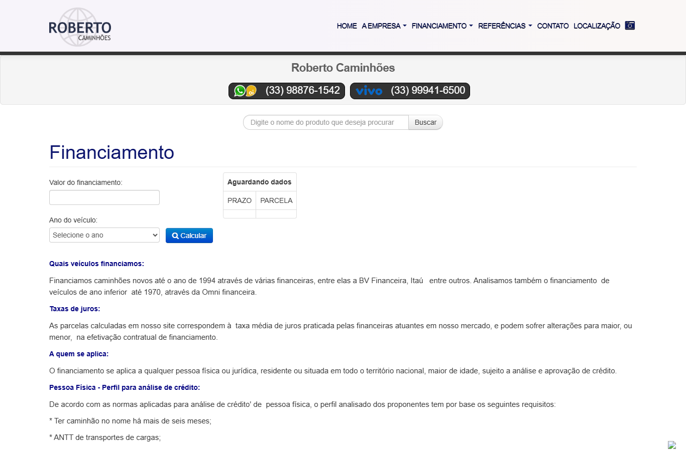
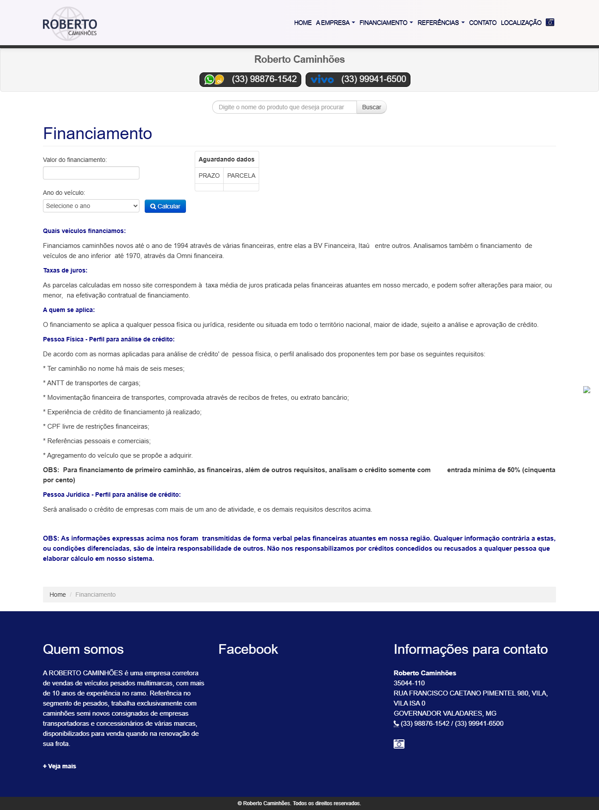

Sistema de Investigação de Marca e Identidade Online
https://www.robertocaminhoes.com.br/financiamento
Prioridade: MEDIUM · Cenário: B_AMBIGUOUS_COMMUNICATION · Revisão humana: PENDING
Trata-se de página de financiamento de uma revenda de veículos pesados (Roberto Caminhões) que divulga intermediação de crédito pela BV Financeira (em conjunto com outras instituições) e disponibiliza simulador próprio de parcelas. Embora não se passe por canal oficial do Banco BV, o estabelecimento omite seu CNPJ, sua razão social e a declaração obrigatória de correspondente bancário na página de oferta de crédito, enquadrando-se em comunicação ambígua/ausência de transparência regulatória (B_AMBIGUOUS_COMMUNICATION / REVIEW_REQUIRED). [Revisor: CONFIRM] A hipótese do analista se sustenta integralmente nas evidências coletadas. A página pertence a uma revenda de veículos pesados (Roberto Caminhões) que disponibiliza simulador próprio de financiamento e declara intermediar crédito através da BV Financeira (E-FOLD, E-TXT-001, E-SHOT-VIEWPORT), mas omite razão social, CNPJ, declaração de condição de correspondente bancário e dados de ouvidoria em toda a extensão da página (E-SHOT-FULL, E-DISC-001). Mantém-se a classificação REVIEW_REQUIRED com prioridade MEDIUM.


| Ref | Tipo | Local | Conteúdo |
|---|---|---|---|
| E-URL | domain | url | URL final: https://www.robertocaminhoes.com.br/financiamento (domínio: www.robertocaminhoes.com.br) |
| E-DISC-001 | text | search_index | Índice de busca (grounding): robertocaminhoes.com.br — **URL:** `https://robertocaminhoes.com.br/financiamento` | **Uso da Marca e Recursos:** Revenda especializada em veículos pesados que divulga em sua página de crédito: *"Financiamos caminhões novos até o ano de 1994 através de várias financeiras, entre elas a BV Financeira"* | Oferece sistema próprio de cálculo de parcelas no site com base em taxas médias e lista requisitos de análise de crédito para PF e PJ | **Conformidade (CNPJ / Razão Social / Declaração):** Em vez de apresentar a declaração padronizada do Banco Central, exibe um aviso de isenção de responsabilidade informando que as condições foram transmitidas verbalmente pelas financeiras, omitindo CNPJ, Razão Social e o vínculo formal de correspondente |
| E-SHOT-VIEWPORT | screenshot | viewport | evidence\C6b97e28ee9\attempt-1\viewport.png (sha256 447d71c5a208074b…) |
| E-SHOT-FULL | screenshot | page | evidence\C6b97e28ee9\attempt-1\fullpage.png (sha256 904988c973bf86cf…) |
| E-TITLE | title | head | Roberto Caminhões - www.robertocaminhoes.com.br |
| E-META-1 | meta | head | og:site_name: Roberto Caminhões |
| E-META-2 | meta | head | og:title: Simulador financiamento |
| E-META-3 | meta | head | og:description: Faça já sua simulação |
| E-HEAD-1 | heading | page | Roberto Caminhões |
| E-HEAD-2 | heading | page | Quem somos |
| E-HEAD-3 | heading | page | |
| E-HEAD-4 | heading | page | Informações para contato |
| E-FOLD | text | viewport (acima da dobra) | Home A empresa Financiamento REFERÊNCIAS Contato Localização Roberto Caminhões (33) 98876-1542 (33) 99941-6500 Buscar Financiamento Valor do financiamento: Ano do veículo: Calcular Aguardando dados PRAZO PARCELA Quais veículos financiamos: Financiamos caminhões novos até o ano de 1994 através de várias financeiras, entre elas a BV Financeira, Itaú entre outros. Analisamos também o financiamento de veículos de ano inferior até 1970, através da Omni financeira. Taxas de juros: As parcelas calculadas em nosso site correspondem à taxa média de juros praticada pelas financeiras atuantes em nosso mercado, e podem sofrer alterações para maior, ou menor, na efetivação contratual de financiamento. A quem se aplica: O financiamento se aplica a qualquer pessoa física ou jurídica, residente ou situada em todo o território nacional, maior de idade, sujeito a análise e aprovação de crédito. Pessoa Física - Perfil para análise de crédito: De acordo com as normas aplicadas para análise de crédito' de pessoa física, o perfil analisado dos proponentes tem por base os seguintes requisitos: * Ter caminhão no nome há mais de seis meses; * ANTT de transportes de cargas; * Movimentação financeira de transportes, comprovada através de recibos de fretes, ou extrato bancário; |
| E-CTA-1 | cta | page | Buscar |
| E-CTA-2 | cta | page | Calcular |
| E-CONTACT-1 | contact | page | <https://api.whatsapp.com/send?phone=5533988761542&text=Quero%20tirar%20d%C3%BAvidas%20sobre%20ve%C3%ADculos> |
| E-IMG-1 | image | page (acima da dobra) | imagem alt='Roberto Caminhões' src=https://www.robertocaminhoes.com.br/admin/images_logo/20190116214738.png (123x78, acima da dobra) |
| E-TXT-001 | text | page | Financiamos caminhões novos até o ano de 1994 através de várias financeiras, entre elas a BV Financeira, Itaú entre outros. Analisamos também o financiamento de veículos de ano inferior até 1970, através da Omni financeira. |
| Dimensão | Sinal | Achado | Refs |
|---|---|---|---|
| VISUAL_IDENTITY | LEGITIMATE | A página utiliza identidade visual própria da loja Roberto Caminhões, sem imitar cores ou layout do Banco BV. | E-SHOT-VIEWPORT E-IMG-1 |
| DECLARED_COMMERCIAL_IDENTITY | CONFUSION | Embora apresente o nome fantasia 'Roberto Caminhões' e endereço físico em Governador Valadares/MG, não informa CNPJ nem razão social. | E-HEAD-1 E-SHOT-FULL E-DISC-001 |
| CORRESPONDENT_TRANSPARENCY | CONFUSION | Não há declaração expressa da condição de correspondente bancário nem divulgação de ouvidoria, apenas um aviso de isenção de responsabilidade sobre taxas transmitidas verbalmente pelas financeiras. | E-FOLD E-SHOT-FULL E-DISC-001 |
| INSTITUTIONAL_LANGUAGE | LEGITIMATE | A linguagem é de corretora/revenda multimarcas que intermedia financiamento através de diversas financeiras (BV Financeira, Itaú, Omni). | E-TXT-001 E-SHOT-FULL |
| LOGO_USAGE | LEGITIMATE | Não há uso do logotipo do Banco BV ou BV Financeira na página inspecionada, apenas menção textual. | E-SHOT-FULL E-IMG-1 |
| SERVICE_JOURNEY | CONFUSION | Oferece simulador próprio de cálculo de parcelas de financiamento e lista critérios de análise de crédito para PF e PJ sem transparência completa de correspondente. | E-FOLD E-CTA-2 E-SHOT-VIEWPORT |
| CONTACT_CHANNELS | LEGITIMATE | Os canais de contato (telefones fixo/móvel e WhatsApp) estão vinculados claramente à loja Roberto Caminhões. | E-FOLD E-CONTACT-1 E-SHOT-FULL |
| CONSUMER_CONFUSION | NEUTRAL | Baixo risco de o consumidor confundir o site com um canal oficial do banco, porém há falha de transparência regulatória na oferta de financiamento por terceiro sem CNPJ e aviso de COBAN. | E-SHOT-FULL E-TXT-001 |
Trata-se de página de financiamento de uma revenda de veículos pesados (Roberto Caminhões) que divulga intermediação de crédito pela BV Financeira (em conjunto com outras instituições) e disponibiliza simulador próprio de parcelas. Embora não se passe por canal oficial do Banco BV, o estabelecimento omite seu CNPJ, sua razão social e a declaração obrigatória de correspondente bancário na página de oferta de crédito, enquadrando-se em comunicação ambígua/ausência de transparência regulatória (B_AMBIGUOUS_COMMUNICATION / REVIEW_REQUIRED).
Nenhum CNPJ ou razão social identificáveis no conteúdo coletado.
| Tipo | Valor | Ref | Contexto |
|---|---|---|---|
| domain | robertocaminhoes.com.br | E-URL | |
| cnpj | 20.190.116/2147-38 (dígito inválido) | E-IMG-1 | imagem alt='Roberto Caminhões' src=https://www.robertocaminhoes.com.br/admin/images_logo/20190116214738 |
| trade_name | Roberto Caminhões | E-META-2 | |
| phone | (33) 98876-1542 | E-FOLD | |
| phone | (33) 99941-6500 | E-FOLD | |
| <https://api.whatsapp.com/send?phone=5533988761542&text=Quero%20tirar%20d%C3%BAvidas%20sobre%20ve%C3%ADculos> | E-CONTACT-1 |
Mapeamento indicativo para apoio à auditoria. Não constitui conclusão regulatória; a decisão definitiva pertence à auditoria.
Fonte: NORMATIVE
Art. 14. O contrato de correspondente deve estabelecer: [...] II - vedação à utilização, pelo contratado, de logomarca ou de outros atributos que sejam similares aos adotados pela instituição contratante em suas agências, postos de atendimento, sítio eletrônico na internet, aplicativo ou outras plataformas de comunicação em rede;
Evidência observada: E-IMG-1 E-SHOT-FULL E-SHOT-VIEWPORT
Fonte: NORMATIVE
Art. 14. O contrato de correspondente deve estabelecer: [...] III - divulgação ao público, pelo contratado, de sua condição de prestador de serviços à instituição contratante, identificada pelo nome com que é conhecida no mercado, com descrição dos produtos e serviços oferecidos e canais de contato da instituição contratante, inclusive de sua ouvidoria, em local visível, em destaque e em formato legível, por meio de: a) sítio eletrônico do correspondente na internet, acessível na página inicial; b) aplicativo e outras plataformas de comunicação em rede do correspondente; [...]
Hipótese: Divulgação ao público da condição de prestador de serviços à contratante ausente, insuficiente ou sem destaque. A norma disciplina correspondentes contratados; o responsável não foi identificado como correspondente.
Evidência observada: E-DISC-001 E-FOLD E-HEAD-1 E-SHOT-FULL E-TXT-001
Informação faltante:
Fonte: NORMATIVE
Art. 3º O correspondente atua por conta e sob as diretrizes da instituição contratante, que assume inteira responsabilidade pelo atendimento prestado aos clientes e usuários por meio do contratado.
Hipótese: Atendimento ao público prestado por meio do contratado em condições que podem não seguir as diretrizes da contratante. A norma disciplina correspondentes contratados; o responsável não foi identificado como correspondente.
Evidência observada: E-CTA-2 E-FOLD E-SHOT-VIEWPORT
Informação faltante:
Se o responsável não for correspondente contratado, os indícios podem caracterizar uso indevido de marca ou fraude, fora do escopo da Res. 4.935: avaliar encaminhamento às áreas jurídica/segurança.
Limitações: requisitos contratuais/internos não fornecidos: mapeamento limitado ao texto normativo
Decisão: CONFIRM → REVIEW_REQUIRED / MEDIUM
A hipótese do analista se sustenta integralmente nas evidências coletadas. A página pertence a uma revenda de veículos pesados (Roberto Caminhões) que disponibiliza simulador próprio de financiamento e declara intermediar crédito através da BV Financeira (E-FOLD, E-TXT-001, E-SHOT-VIEWPORT), mas omite razão social, CNPJ, declaração de condição de correspondente bancário e dados de ouvidoria em toda a extensão da página (E-SHOT-FULL, E-DISC-001). Mantém-se a classificação REVIEW_REQUIRED com prioridade MEDIUM.
| Tema | Severidade | Questionamento | Refs |
|---|---|---|---|
| domain_attribution | MEDIUM | Responsável pela página não identificado; a conclusão sobre a marca não pode ser atribuída a um estabelecimento específico. | E-URL |
| Fonte | Consulta / hipótese | URL original | Título / trecho |
|---|---|---|---|
| grounding | Objetivo: Revendas de seminovos e lojas multimarcas que divulgam financiamento da marca.
Execute no Google Search as seguintes consultas (dorks):
- "Banco BV" financiamento (loja OR revenda OR seminovos OR multimarcas) veículos -site:bv.com.br -site:bancobv.com.br -site:bvfinanceira.com.br -site:bvinvestimentos.com.br -site:napista.com.br -site:bvopen.com.br -site:meufinanciamentosolar.com.br -site:votorantim.com.br -site:vam.com.br -site:reclameaqui.com.br -site:jusbrasil.com.br -site:jus.br -site:weebly.com -site:site123.me
- "bv financeira" (seminovos OR multimarcas OR revenda) financiamento -site:bv.com.br -site:bancobv.com.br -site:bvfinanceira.com.br -site:bvinvestimentos.com.br -site:napista.com.br -site:bvopen.com.br -site:meufinanciamentosolar.com.br -site:votorantim.com.br -site:vam.com.br -site:reclameaqui.com.br -site:jusbrasil.com.br -site:jus.br -site:weebly.com -site:site123.me
- ("financiamos" OR "trabalhamos com" OR "financie") ("bv financeira" OR "Banco BV") veículos -site:bv.com.br -site:bancobv.com.br -site:bvfinanceira.com.br -site:bvinvestimentos.com.br -site:napista.com.br -site:bvopen.com.br -site:meufinanciamentosolar.com.br -site:votorantim.com.br -site:vam.com.br -site:reclameaqui.com.br -site:jusbrasil.com.br -site:jus.br -site:weebly.com -site:site123.me
Liste de forma abrangente as páginas públicas encontradas (até 12 resultados distintos), informando para cada uma o nome do estabelecimento/perfil, a URL e como a marca é utilizada (destaque visual, título, feirão, simulador, redes sociais e se há ou não identificação clara de CNPJ e condição de correspondente bancário). H2-product:financiamento de carro e multimarcas | https://www.robertocaminhoes.com.br/financiamento | robertocaminhoes.com.br **URL:** `https://robertocaminhoes.com.br/financiamento` | **Uso da Marca e Recursos:** Revenda especializada em veículos pesados que divulga em sua página de crédito: *"Financiamos caminhões novos até o ano de 1994 através de várias financeiras, entre elas a BV Financeira"* | Oferece sistema próprio de cálculo de parcelas no site com base em taxas médias e lista requisitos de análise de crédito para PF e PJ | **Conformidade (CNPJ / Razão Social / Declaração):** Em vez de apresentar a declaração padronizada do Banco Central, exibe um aviso de isenção de responsabilidade informando que as condições foram transmitidas verbalmente pelas financeiras, omitindo CNPJ, Razão Social e o vínculo formal de correspondente |
Original: https://www.robertocaminhoes.com.br/financiamento
Final: https://www.robertocaminhoes.com.br/financiamento
| Artefato | Caminho | SHA-256 | Bytes |
|---|---|---|---|
| screenshot_viewport | evidence\C6b97e28ee9\attempt-1\viewport.png | 447d71c5a208074b279a05f73349d9713654234faa0bd8315f7bd6c5cca2e89d | 100788 |
| screenshot_full | evidence\C6b97e28ee9\attempt-1\fullpage.png | 904988c973bf86cf0b7e377abf9f1dc9dad1cfbdfaba9fd545eb62851ba0c23b | 185261 |
| html | evidence\C6b97e28ee9\attempt-1\page.html.txt | 518b093dc462b5889117c01a7dda426ad7c617e249752445cff2b3e6f5cb97b4 | 32239 |
| text | evidence\C6b97e28ee9\attempt-1\text.txt | 1ae3f1156eb5022e38c5dc7277ec28f3d8c005322aaaa9cb491ce29e0411e684 | 3024 |
| page_data | evidence\C6b97e28ee9\attempt-1\page.json | 0d0699ab91098daea2dac0927c4bc51cfe702eb99f72b3695cdeba766bd88a12 | 8408 |
| Quando | De | Para | Nota |
|---|---|---|---|
| 2026-11-23T14:17:57+00:00 | DISCOVERED | QUEUED | prioritised (score 2.0) |
| 2026-11-23T14:33:07+00:00 | QUEUED | COLLECTING | |
| 2026-11-23T14:33:19+00:00 | COLLECTING | COLLECTED | |
| 2026-11-23T14:33:19+00:00 | COLLECTED | ANALYZING | |
| 2026-11-23T14:34:06+00:00 | ANALYZING | REVIEWING | |
| 2026-11-23T14:34:16+00:00 | REVIEWING | COMPLETED |